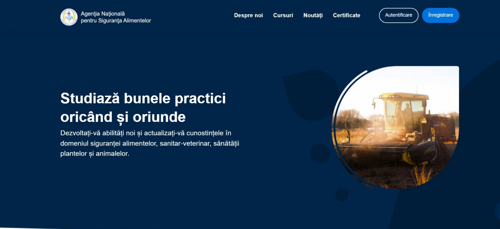

Вниманию всех производителей сельскохозяйственной продукции растительного происхождения!

Аннулирован Закон 228/2010г. О защите растений и фитосанитарном карантине. С 14 сентября 2024 года вступил в силу Закон № 422
О защитных мерах против вредных для растений организмов. Закон направлен на предотвращение ввоза и распространения вредных организмов,
угрожающих сельскому хозяйству. Он вводит фитосанитарные меры для защиты растений и гармонизирует законодательство с европейскими стандартами.
Читать на legis.md
Курсы для потребителей средств фитосанитарного назначения

С 2024года на платформе eLearning Агентства по Безопасности Пищевых Продуктов
открыты курсы по устойчивому применению пестицидов. Эти курсы предназначены для фермеров,
агрономов, производителей сельскохозяйственной продукции и всех, кто занимается защитой растений.
Основная цель программы – обучить участников безопасному и эффективному использованию средств фитосанитарного назначения
с минимальным воздействием на окружающую среду и здоровье людей. В курсе подробно рассматриваются методы применения пестицидов,
правила хранения и предотвращение загрязнений. Стоимость курсов 310 лей. Программа разработана в соответствии с европейскими
стандартами и законодательством Республики Молдова. Успешно завершившим обучение выдаются сертификаты, подтверждающие их
знания в области устойчивого применения средств фитосанитарного назначения. Согласно Закона 119/2004 о средствах фитосанитарного назначения
данный курс обязателен для пользователей пестицидов I - II группы токсичности
Перейти на курсы